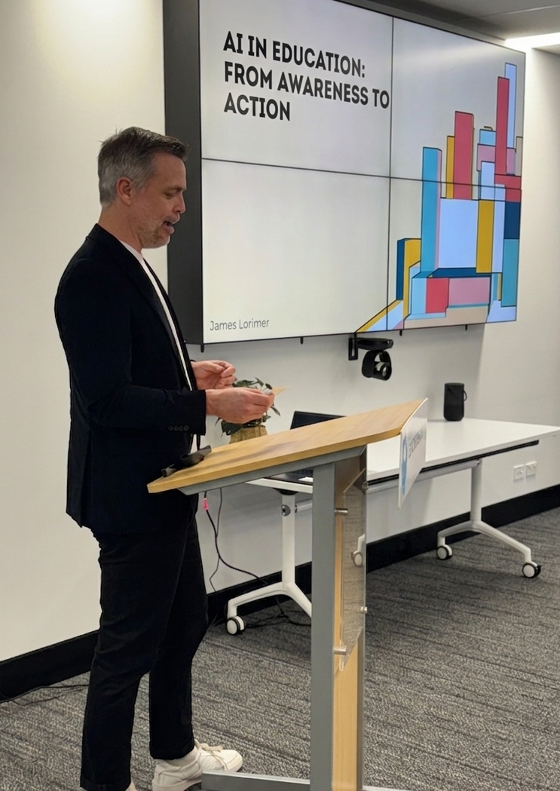

Workshops across AI integration, leadership development, pedagogy, inclusion, and wellbeing, designed and delivered by someone with 15 years of teaching and school leadership experience. Below is the flagship AI in Schools program in detail.
Sessions are delivered on-site at your school, not at a conference centre or off-site facility. Context matters, and your school's context is the one we work in.
Four sessions spread across a term gives staff time to try things, come back with questions, and build genuine habits. One-offs don't stick. This does.
Sessions are tailored to different audiences: leadership teams, teaching staff, and admin. The program builds capability at every level.
Each session builds on the last. By the end of the term, your school has moved from awareness to embedded capability.
Your leadership team gets an honest, grounded picture of where AI actually is, where it's heading, and what it means for your school. This isn't hype or fear. It's a calibrated understanding of what's real right now.
We build shared language across the team so that everyone is working from the same understanding. Then we start to think about what informed policy looks like for your context.
This session is about immediate, tangible value. We go through practical AI workflows for planning, feedback, assessment design, parent communication, and differentiation. These are the tasks that eat teacher time every week.
Staff don't just hear about these workflows. They try them in the session itself. By the time they leave, they've already saved time. That's what makes this stick.
This session goes deeper into how AI can genuinely support students who need it most. Students with learning differences, EAL/D students, and students from disadvantaged backgrounds don't benefit automatically from AI adoption. This session makes sure they do.
We look at how AI works within a range of pedagogical practices, not as a replacement for good teaching, but as a tool that extends what great teachers can do. Differentiation, scaffolding, UDL principles.
The final session zooms out to the whole-school level, looking at how AI can support administrative processes, operations, and the kind of deep understanding of your student community that good school leaders want but rarely have time for.
We focus on insights that are genuinely actionable: not just data dashboards that look impressive, but information that changes what your leadership team does on Monday morning.

"Engaging and knowledgeable within this rapidly growing area. Your guidance was extremely valuable. The feedback we received from all those who attended was glowing."
Network Principal, Western Australia
The program is designed for WA schools at any stage of AI readiness. You don't need to be ahead of the curve. You just need to be ready to start.
If your leadership team is still figuring out where to begin, Session 1 (Awareness) is designed exactly for this. You'll leave with a clear picture and a practical path forward.
If some staff are already using AI tools but there's no coherence or policy, the program brings everyone to the same level and builds a school-wide approach.
James works with both primary and secondary schools. Every session is adapted . The challenges are different in each, and the delivery reflects that.
If you're tired of one-off PD that doesn't stick, this program is built specifically to leave your staff with capability they own, not dependency on any vendor or consultant.
Sessions are scheduled to suit the school term. Get in touch to start the conversation.
james@empoweredschools.com.au